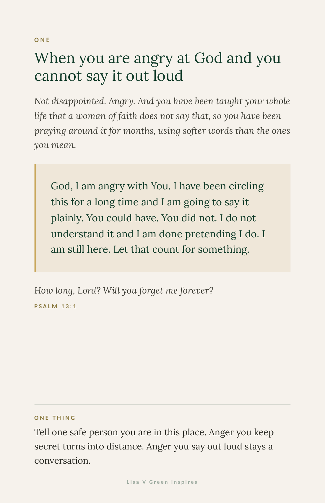
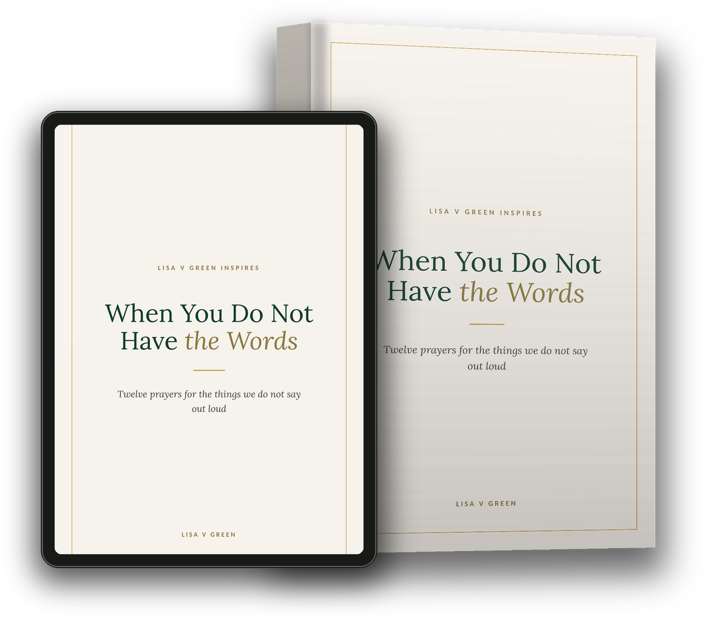

Lisa V Green Inspires
The anger. The shame. Three in the morning. Written by a nurse of thirty five years, for the woman still showing up.
These are not prayers for occasions. They are prayers for the moments we skip over because they do not make us look good.
Lisa V Green
The twelve
Do not read it front to back. Find the page that matches today. The rest will be there when you need them, and you will need them.
Inside every page
Not a theme. The actual situation, described the way it actually happens, so you know within one line whether this page is yours today.
Written to be said out loud in under thirty seconds. No spiritual language wrapped around it. If out loud is too much, a whisper counts.
Every prayer is anchored to scripture. It is meant to send you back to your own Bible, never to replace it.
Faith without works is dead. Every page ends with one small action. A phone call. A number written down. An apology. Something.

Registered nurse, thirty five years
Pastor and author
Before you begin
I spent thirty five years as a nurse. I have prayed with people in hallways, in waiting rooms, and at three in the morning when the machines were the only thing making noise.
Here is what I learned in those rooms. The prayers that matter are almost never the pretty ones. They are short, they are honest, and most of them would never be said from a pulpit.
Somewhere along the way we got the idea that trusting God means not feeling it. That a woman of faith does not get angry, does not get jealous, does not get so tired of her own life that she cannot look at it straight.
That is not what trust is. Trust is feeling every bit of it and staying anyway.
You are not failing because you are furious. You are not faithless because you are disappointed. God is not embarrassed by any of it. He already knows. He is waiting on you to say it.
I am praying for you,
Lisa V Green

Twelve prayers, a table of contents, and one thing to do on every page. It arrives in your inbox as a PDF you can read on your phone or print and keep by the bed.
Before you go
If any of those met you where you actually are instead of where you are supposed to be, then you already know how I write and how I teach. Faith that works on a Tuesday, not just on Sabbath.
I wrote a thirty one day devotional for the woman who is rebuilding. One page a day. Scripture, an honest reflection, and one thing to actually do with it. It was written for the woman in the middle of it, not the one who already made it to the other side and cleaned up the story.
$13.95. Every woman who orders comes into our private community, where I pray with you, encourage you each week, and we hold each other to what we said we were going to do. The first month is included with the book.